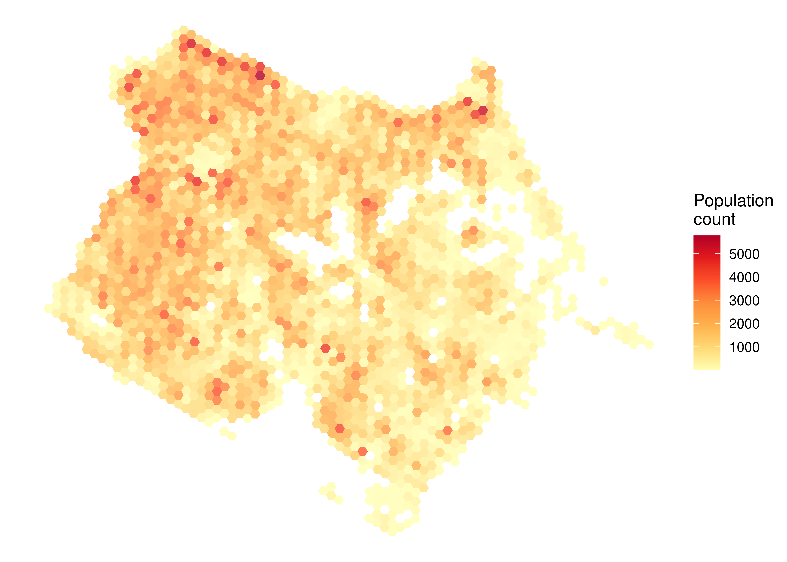
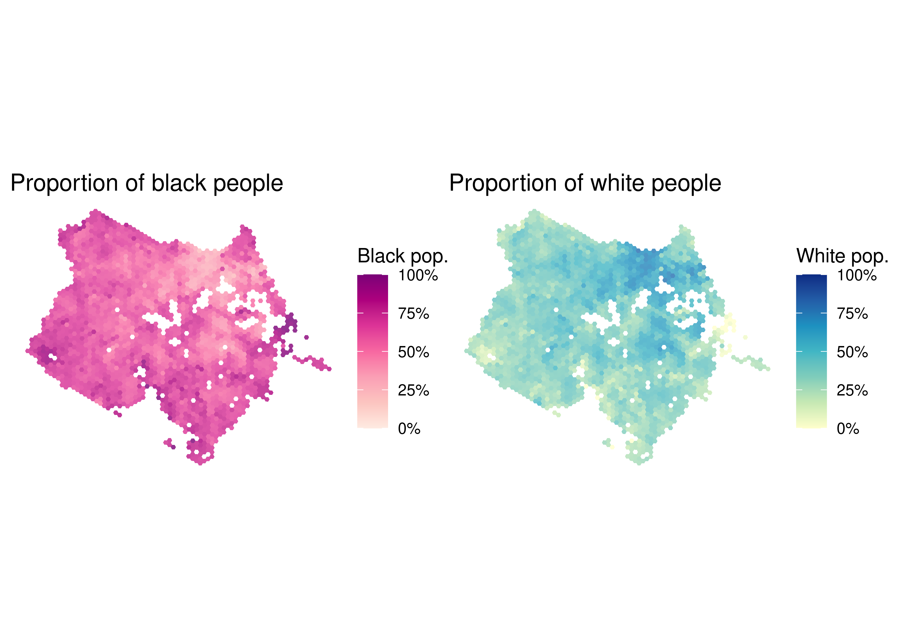
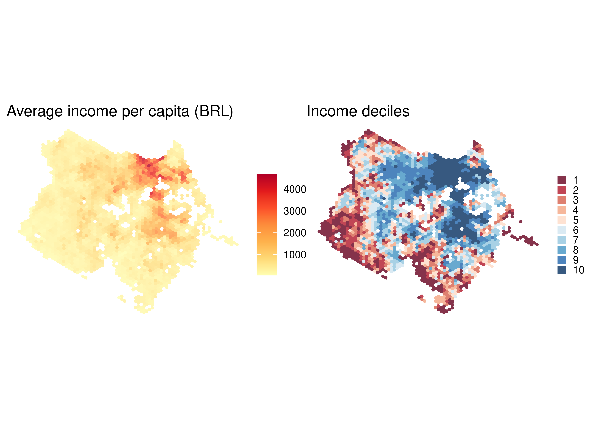

data_fortaleza <- aopdata::read_population(
city = "Fortaleza",
year = 2010,
geometry = TRUE,
showProgress = FALSE
)7 Population and socioeconomic data
The sociodemographic data used in AOP, including aggregate information on the spatial distribution of the population and of their characteristics in terms of income per capita, race, sex and age, comes from the 2010 Census. This dataset can be downloaded in R with the read_population() function from the {aopdata} package. This function takes a city parameter, used to indicate the city whose data must be downloaded. To include the spatial information of each grid cell when downloading the data, the geometry parameter, which defaults to FALSE, must take the value TRUE.
In the example below, we show how to download the population and socioeconomic data of Fortaleza:
The output includes the Census reference year, columns identifying the grid cells and the municipality and socioeconomic data in multiple columns with encoded names:
names(data_fortaleza) [1] "year" "id_hex" "abbrev_muni" "name_muni" "code_muni"
[6] "P001" "P002" "P003" "P004" "P005"
[11] "P006" "P007" "P010" "P011" "P012"
[16] "P013" "P014" "P015" "P016" "R001"
[21] "R002" "R003" "geometry" Table 7.1 presents the data dictionary with the description of each column, as well as observations about some of the values. This description can also be found in the documentation of the function, running the command ?read_population in an R session.
| Column | Description | Observation |
|---|---|---|
| year | Reference year | |
| id_hex | Unique hexagon identifier | |
| abbrev_muni | 3-letter abbreviation of municipality name | |
| name_muni | Municipality name | |
| code_muni | 7-digit municipality IBGE code | |
| P001 | Total number of people | |
| P002 | Number of white people | |
| P003 | Number of black people | |
| P004 | Number of indigenous people | |
| P005 | Number of people of yellow color | |
| P006 | Number of men | |
| P007 | Number of women | |
| P010 | Number of people from 0 to 5 years old | |
| P011 | Number of people from 6 to 14 years old | |
| P012 | Number of people from 15 to 18 years old | |
| P013 | Number of people aged 19 to 24 years old | |
| P014 | Number of people aged 25 to 39 years old | |
| P015 | Number of people aged 40 to 69 years old | |
| P016 | Number of people aged 70 years old and over | |
| R001 | Average income per capita | Values from 2010, in Brazilian Reais (BRL) |
| R002 | Income quintile | Values range from 1 (poorest) to 5 (richest) |
| R003 | Income decile | Values range from 1 (poorest) to 10 (richest) |
| geometry | Spatial geometry |
The following sections show a few examples illustrating how to create spatial visualizations out of this dataset.
7.1 Population spatial distribution
In the code below, we load a couple data visualization packages and configure the map. With a single command, we can visualize the population spatial distribution in Fortaleza. The figure shows a choropleth map in which the color of each grid cell represents the number of people that reside there (variable P001).
library(patchwork)
library(ggplot2)
ggplot(subset(data_fortaleza, P001 > 0)) +
geom_sf(aes(fill = P001), color = NA, alpha = 0.8) +
scale_fill_distiller(palette = "YlOrRd", direction = 1) +
labs(fill = "Population\ncount") +
theme_void()
7.2 Population spatial distribution by race
Besides reporting the total population count in each cell, the dataset also includes information on population count by race (variables P002 to P005), sex (variables P006 and P007) and age (variables P010 to P016). The code below illustrates how simple it is to calculate the proportion of black and white people in each hexagon and visualize this information on a map.
pop_black <- ggplot(subset(data_fortaleza, P001 > 0)) +
geom_sf(aes(fill = P003 / P001), color = NA, alpha = 0.8) +
scale_fill_distiller(
name = NULL,
palette = "RdPu",
direction = 1,
labels = scales::percent,
limits = c(0, 1)
) +
labs(title = "Proportion of black people") +
theme_void()
pop_white <- ggplot(subset(data_fortaleza, P001 > 0)) +
geom_sf(aes(fill = P002 / P001), color = NA, alpha = 0.8) +
scale_fill_distiller(
name = NULL,
palette = "YlGnBu",
direction = 1,
labels = scales::percent,
limits = c(0, 1)
) +
labs(title = "Proportion of white people") +
theme_void()
pop_black + pop_white
7.3 Income spatial distribution
Finally, the dataset also includes information on the average income per capita of each hexagon (R001) and their classification in terms of income quintile (R002) and decile (R003). Using this data, we can visualize the income spatial distribution in the city.
income <- ggplot(subset(data_fortaleza, P001 > 0)) +
geom_sf(aes(fill = R001), color = NA, alpha = 0.8) +
scale_fill_distiller(name = NULL, palette = "YlOrRd", direction = 1) +
labs(title = "Average income per capita (BRL)") +
theme_void()
deciles <- ggplot(subset(data_fortaleza, !is.na(R002))) +
geom_sf(aes(fill = factor(R003)), color = NA, alpha = 0.8) +
scale_fill_brewer(name = NULL, palette = "RdBu") +
labs(title = "Income deciles") +
theme_void() +
theme(legend.key.size = unit(0.3, "cm"))
income + deciles